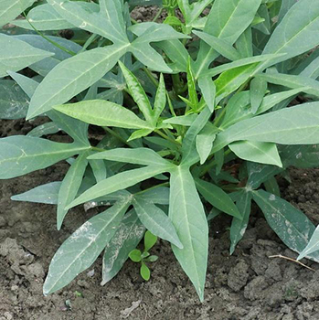

社子島是大臺北地區重要的蔬菜產地之一。
社子島的地瓜葉菜園
社子島的時令鮮蔬之中以品質優良的地瓜葉(甘藷葉)最為著名。地瓜葉在社子島的種植面積很大，很多農家都有種植。地瓜葉本身很好種，就像是照顧小嬰兒一樣，只要能按照一定的程序澆水、施肥，她就能長得很好、很漂亮。地瓜葉的纖維質很多，具有高營養價值，對人體健康很有助益，現今更有「蔬菜皇后」的美名。主要的生長季節是在三、四月，全年皆可採收。
目前社子島上常見的地瓜葉品種有三種，第一種是深綠色的葉子，形狀是三角形鋸齒狀的樣子，以前被稱作是「三腳藤仔」，大多被作為餵養豬隻的飼料，真的沒東西吃才會吃這個，所以地瓜葉又被稱作「豬菜葉」；第二種是改良過的品種，一樣是深綠色的葉子 ，但葉子的形狀是心形的，葉子較圓較大，吃起來的口感較佳，很受市場上的歡迎；第三種是紅地瓜葉，紅色的葉子，也屬於改良過的品種，營養價值高。
此外，也可分為吃葉子和吃塊根的兩種，一般來說，會長地瓜的地瓜葉葉子較小較尖，葉子上會有苔毛，口感也較老，通常不會成為桌上的菜餚，以作為飼料為主；不會長地瓜的地瓜葉，葉子較大較圓，葉子較嫩，不過塊根就長不大，兩者是不一樣的品種。
- 
爪形地瓜葉
圓地瓜葉
紅地瓜葉
其他時令鮮蔬
| 菠菜 | 瓠瓜 | 芋頭 |
 |
||
| 高麗菜 | A菜 | 薄荷 |
 |
||
| 蚵仔白菜 | 齒葉白菜 | 菠菜苗 |
| 蒜苗 | 蔥 | 籮蔓萵苣 |
資料來源：王俊明會長蒞校分享影片、張一峰先生導覽解說溪沙尾菜園

- 以前社子島的農作物都是這邊種完拿去大臺北賣，不會有別的競爭對手，可是現在有高速公路了，中部西螺、北部桃園八德的菜也可能會出現在臺北，就變得比較難賣了。 我覺得現在的比較不好，因為雖然我們的品質可能比較好，但是價錢也會比較高，可能就會比較沒有人要買。希望我們可以把種出好地瓜葉的本事繼續傳承下去！